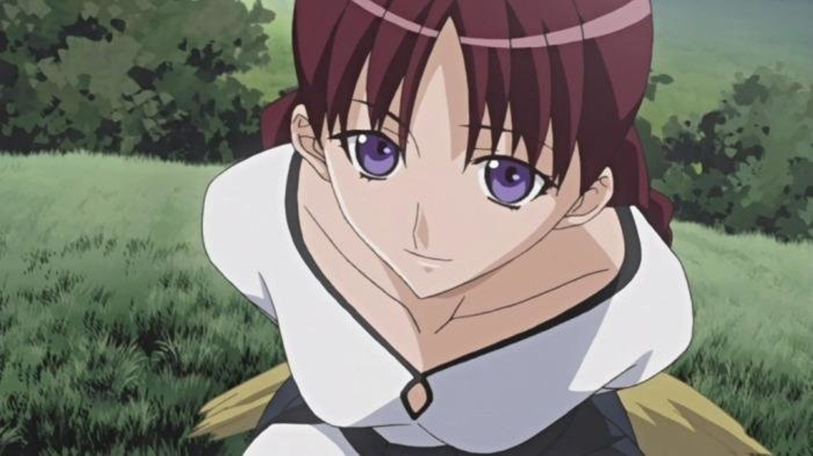

Данная песня была использована в 1 сезоне сериала который был снят по книге
Огловление
Волчи́ца и пря́ности (яп. 狼と香辛料 О:ками то ко:синрё:, досл. «Волчица и специи») — популярная японская серия ранобэ, написанная Исуной Хасэкурой, с иллюстрациями Дзю Аякуры. В 2007 году число проданных экземпляров, согласно Mainichi Shimbun, превысило 500 тысяч, а в 2008 — уже 2,2 млн экземпляров.[1] Всего же было выпущено 20 томов «лайт-новел» (14 основных и шесть «побочных историй», которые носят название «Side Colors» и «Spring Log»). Несмотря на официальное завершение серии на 17 томе, осенью 2016 продолжился выпуск как спин-оффа основной сюжетной линии «Волчица и пряности» (сборники рассказов «Spring Log»), так и сиквела «Волчица и пергамент». На сентябрь 2018 обе серии насчитывают по 3 тома. Несмотря на то, что «Волчица и пряности» написана в жанре фэнтези, она выделяется из других произведений подобного жанра, так как герои по большей части вращаются в мире торговли и товарно-денежных отношений, а не в мире меча и магии.
Манга, нарисованная Кэйто Коумэ, публиковалась в журнале «Dengeki Maoh» с сентября 2007 года по декабрь 2017, а аниме, снятое по мотивам романов, было показано в 2008 году. Позже по сюжету произведения вышла видеоигра в жанре «симулятор свиданий», предназначенная для платформы Nintendo DS. Также на начало 2019 года анонсированная VR-игра от студии Spicy Tails.
Персонажи
Крафт Лоуренс (яп. クラフト・ロレンス Курафуто Рорэнсу) — 25-летний странствующий торговец, зарабатывающий куплей-продажей в различных городах. Когда ему было двенадцать, он стал учеником своего родственника, бывшего торговцем, а в восемнадцать начал свой путь и самостоятельную жизнь. Его мечта и цель — накопить достаточно денег и открыть свой магазин, и вот уже 7 лет он стремится к ней, обретая опыт в торговле. Однажды он встречает Холо и соглашается взять её с собой, помочь добраться до севера, её родины. Холо же по пути помогает ему, давая мудрые советы и используя обострённые волчьи чувства. Постепенно, по мере продвижения, и Лоуренс, и Холо проявляют взаимные усиливающиеся чувства, привязанность и заботу друг о друге. Хоть Лоуренс и редко показывает своё отношение и чувства к Холо, тем не менее он по-настоящему заботится о ней. Вместе они не только выходят из множества неприятных ситуаций, но и увеличивают свой денежный капитал. Холо дорога Лоуренсу, но он старается не показывать открыто свои чувства. Лоуренс очень добрый, расчётливый и разумный. Он упоминал, что за свою жизнь был атакован волками восемь раз. Наконец, в завершении сериала, Крафт Лоуренс открыто признаётся Холо в любви, жертвуя ради неё своей мечтой на том этапе, а она отвечает ему взаимностью.
Холо (яп. ホロ Хоро) — волчица, божество урожая, родом из северных земель, которые называются Йойс. Она заключила договор с жителями городка и деревни Пасро, пообещав обеспечивать хороший урожай пшеницы каждый год. Но время шло и жители города и деревни стали всё меньше верить в Холо и уже не надеялись на неё, как когда-то. По этой причине Холо решила покинуть деревню, спрятавшись в пшенице в телеге странствующего торговца Лоуренса, и вернуться на север, в то место, где она родилась и которое считает своим домом. Холо путешествует вместе с Лоуренсом из города в город, попутно помогая своему спутнику решать различные проблемы (хотя иногда их причиной является она). Холо принимает форму юной девушки с волчьими ушками и длинным пушистым хвостом. Также она может принимать свою истинную форму — огромной волчицы, наводящей страх на людей. Чтобы изменить форму, ей нужно либо выпить немного крови, либо съесть зёрна пшеницы. Представилась как «Холо Мудрая Волчица из Йойс». Способна хорошо отличать правду от лжи. Практически всё время Холо была одинока, поэтому иногда она показывает хрупкую сторону своей души. Холо полагается на Лоуренса, поскольку боится одиночества, что Лоуренс очень хорошо понимает, будучи странствующим торговцем, и по-своему старается поддерживать и утешать её. Также Холо хорошо осознаёт и боится такой огромной разницы в продолжительности их жизней. Для неё человеческая жизнь словно мгновение. Холо довольно сильно боится снова остаться в одиночестве, хоть и скрывает это за своими шутками. Но несмотря на то, что поначалу она шутит о своей привязанности и чувствах к Лоуренсу, она медленно, но верно влюбляется в него. Со временем она также начинает испытывать к Лоуренсу глубокие чувства. Она обожает вкусную еду и алкоголь, сладкое, но особенно любит яблоки. Холо гордится своим хвостом и постоянно проявляет особую заботу о нём: расчёсывает, гладит, поддерживает в ухоженном состоянии
Нора Арент (яп. ノーラ・アレント Но:ра Арэнто) — опытная пастушка из подконтрольного церкви города Рубинхейген. Её помощником и верным другом является пастуший пёс по имени Энек. Мечта Норы — бросить свою нынешнюю работу и стать профессиональной портнихой, поэтому она соглашается помочь Лоуренсу и Холо и идёт на опасную контрабанду золота. Её считают колдуньей и язычницей из-за рода занятий и способности выпасать стадо овец на пастбищах, кишащих волками, не потеряв при этом ни одной овцы. Сэйю: Маи Накахара
Хлоя (яп. クロエ Куроэ) — этот персонаж присутствует только в аниме, однако имеет мужской аналог в основном произведении. В оригинале её прототипом выступает Ярэй, однако Хлоя имеет более близкие отношения с главным героем. Она — жительница Пасро, давно знакома с Лоуренсом, который учил её премудростям торговли. Хлоя уважает его как учителя и хорошего друга. Их дружба распалась, когда Хлоя вместе с гильдией Медио пыталась схватить Холо и передать её церкви. На первое место Хлоя ставит собственное благополучие и жителей деревни. Судьба же Ярэя и Хлои развернулась кардинально иным образом. Сэйю: Каори Надзука
 Нора Арент (яп. ノーラ・アレント Но:ра Арэнто) — опытная пастушка из подконтрольного церкви города Рубинхейген. Её помощником и верным другом является пастуший пёс по имени Энек. Мечта Норы — бросить свою нынешнюю работу и стать профессиональной портнихой, поэтому она соглашается помочь Лоуренсу и Холо и идёт на опасную контрабанду золота. Её считают колдуньей и язычницей из-за рода занятий и способности выпасать стадо овец на пастбищах, кишащих волками, не потеряв при этом ни одной овцы. Сэйю: Маи Накахара
Нора Арент (яп. ノーラ・アレント Но:ра Арэнто) — опытная пастушка из подконтрольного церкви города Рубинхейген. Её помощником и верным другом является пастуший пёс по имени Энек. Мечта Норы — бросить свою нынешнюю работу и стать профессиональной портнихой, поэтому она соглашается помочь Лоуренсу и Холо и идёт на опасную контрабанду золота. Её считают колдуньей и язычницей из-за рода занятий и способности выпасать стадо овец на пастбищах, кишащих волками, не потеряв при этом ни одной овцы. Сэйю: Маи Накахара